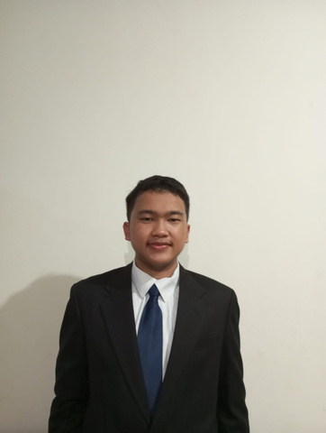

Mahasiswa Business Information Technology di BINUS University yang merancang antarmuka digital berbasis riset pengguna, dengan pengalaman langsung mengelola usaha keluarga sejak 2022.

Fokus pada UI/UX Design dan telah meraih Juara 1 nasional dalam kompetisi desain. Selain aktif merancang di Figma, turut terlibat langsung dalam operasional usaha keluarga sejak 2022 — mulai dari logistik, pelayanan toko, hingga penjualan langsung ke pelanggan. Pengalaman ini membentuk pemahaman praktis terhadap kebutuhan dan perilaku pengguna, yang mendukung pendekatan desain berbasis riset dan problem-solving nyata.